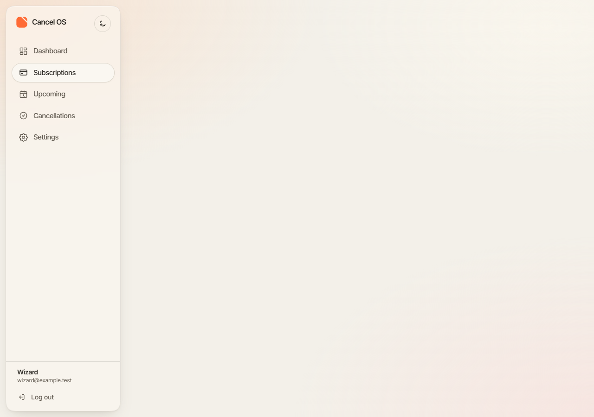
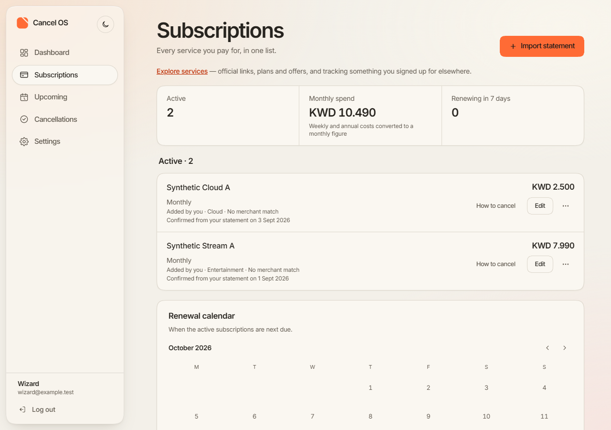

Cancel OS · Earlier reviews: premium identity, glass and depth, refine 2, polish 1
A small motion correction on the website and the Android app, on top of the polish-1 checkpoint
49b86de. Layout, palette and identity are unchanged.
Every screen uses synthetic test data (account wizard@example.test, services named "Synthetic …")
on a local stand-in server. No real person's data appears.
Motion approval is pending your review of these recordings. Screen-reader behaviour, smoothness on a physical device and release readiness are unverified.
This is a public preview. Anyone with the link can open it. It asks search engines not to index it, but that is a request, not access control.
49b86de's website, 6.89 sAfter each click the new page starts invisible and fades and drifts in over about 450 ms.
b85e0cf, 6.83 sEach page is there as soon as it renders. The dashboard's amounts appear without moving.
Both recordings follow the same script. Captions and the take's clock are drawn into the frame:

49b86de's websiteThe rows are in the page as the server sent them, but at opacity 0. The main column looks empty.

b85e0cfThe same server-rendered content, visible.
49b86de's phone code, 7.75 sThe reopen tap closes the menu: it stays closed.
b85e0cf, 7.67 sThe same tap reopens the menu, and the fade turns around.
The emulator's own screen recording, at real speed. Light, animations on. No captions in the frame. The moments, from the recording logs:
check:web-motion, a new check)b85e0cf: all passed. Content was visible with scripts held and with
JavaScript disabled. Navigation had 0 faded or shifted frames, with motion on and under reduced motion. The
amount cards had 0 moving frames. A press reached 0.98. The row menu still grows, and the loader still moves
(and stands still under reduced motion).check:edit-first-click): 63 of 63 passed on
b85e0cf, including the 390 px focus-visibility correction.What this does and doesn't show. The whole-page animation no longer hides server-rendered
content. That doesn't make every page work without JavaScript: /subscriptions still shows only its
loader with scripts disabled, because its rows stream in and need script to appear.
check:android-menu-reopen, a new check, on the emulator)Each attempt is Back, then a tap on More options. The delay between them was read from the device's input log. Every case ran with animations on and again under Remove animations.
| Mode | Tap after Back | Before (49b86de) | After (b85e0cf) |
|---|---|---|---|
| Animations on, during the fade | 27–81 ms | Failed: the tap closed the menu (30, 33, 81 ms) | Reopened (27, 35, 78 ms) |
| Animations on, as the window is removed | 126–178 ms | Lost (127, 150, 178 ms) | Unresolved: 150 and 178 ms lost; 126 ms reopened |
| Animations on, after the window has gone | ≈ 330 ms | Reopened (328 ms) | Reopened (327 ms) |
| Remove animations, as the window is removed | 27–32 ms | Lost (27, 32 ms) | Unresolved: lost (27, 29 ms) |
| Remove animations, after the window has gone | 80–328 ms | Reopened (80, 128, 148, 176, 327 ms) | Reopened (83, 146, 161, 177, 328 ms) |
| Both modes | — | A tap outside the menu (on a row) closes it without opening the row; Back closes it and stays on the list; More options while open closes it. Passed before and after. | |
CorrectedThe motion review's Android "observation" of this defect came from
a faulty test. Its script sent Back and the tap as one sh -c "…" command through a helper
that splits arguments, so the device ran only sh -c input and Back was never
sent.
The defect itself is real. It was reproduced afterwards with Back and the tap sent as one device command, and the gap read from the device's input log, as in the table above. The review is kept as written, with a dated correction note beside the finding.
adb. They establish the order of
events and the logic of the fix. Frame pacing, a person's finger timing, and the size of the gap on real
hardware are not established./subscriptions without JavaScript shows only its
loader (streamed content). This is pre-existing and not motion.https://raw.githubusercontent.com/YahyaLendani/cancel-os-design-review/main/motion-correction-1/index.html (this page's source, as text)https://raw.githubusercontent.com/YahyaLendani/cancel-os-design-review/main/motion-correction-1/assets/web-before.mp4https://raw.githubusercontent.com/YahyaLendani/cancel-os-design-review/main/motion-correction-1/assets/web-after.mp4https://raw.githubusercontent.com/YahyaLendani/cancel-os-design-review/main/motion-correction-1/assets/scripts-held-before.pnghttps://raw.githubusercontent.com/YahyaLendani/cancel-os-design-review/main/motion-correction-1/assets/scripts-held-after.pnghttps://raw.githubusercontent.com/YahyaLendani/cancel-os-design-review/main/motion-correction-1/assets/android-menu-before.mp4https://raw.githubusercontent.com/YahyaLendani/cancel-os-design-review/main/motion-correction-1/assets/android-menu-after.mp4